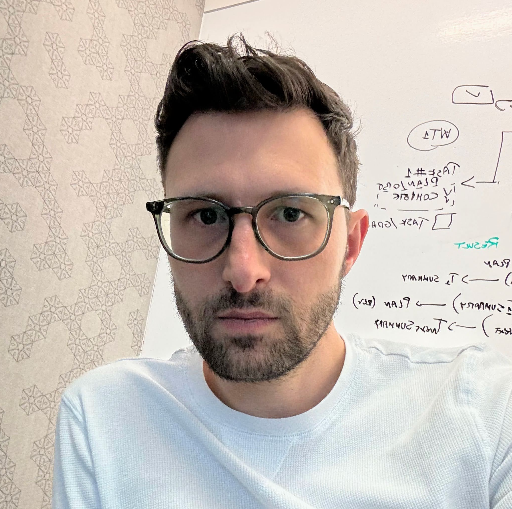

Hi, I'm Michele Tufano
Sr. Software Engineer at Google @ DevAI Research Team.
My research focuses on AI for Software Engineering, specifically exploring Agentic Software Engineering.

About Me
I am a Senior Software Engineer at Google, working within the DevAI research team. I obtained my Ph.D. in Computer Science at The College of William and Mary. Previously, I was a Sr. Research Scientist in Visual Studio at Microsoft.
My primary research interests lie at the intersection of Deep Learning and Software Engineering. I am currently focused on Agentic Program Repair, leveraging LLMs to automate developers' tasks, reproduce bugs, and generate reliable patches.
- Based in the Seattle Metropolitan Area.
- tufanomichele@google.com
- View Curriculum Vitae (CV)
Latest News
Experience & Education
Service & Talks
Professional Service
Invited Talks
Publications & Pre-prints
Focusing on LLMs, Agentic Program Repair, and AI for Software Engineering.